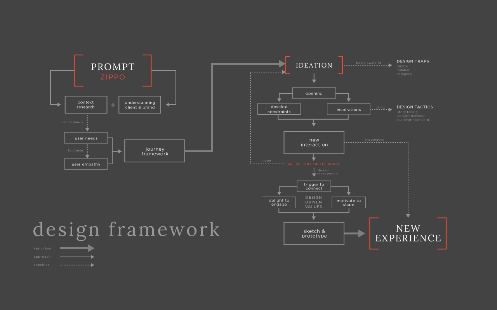
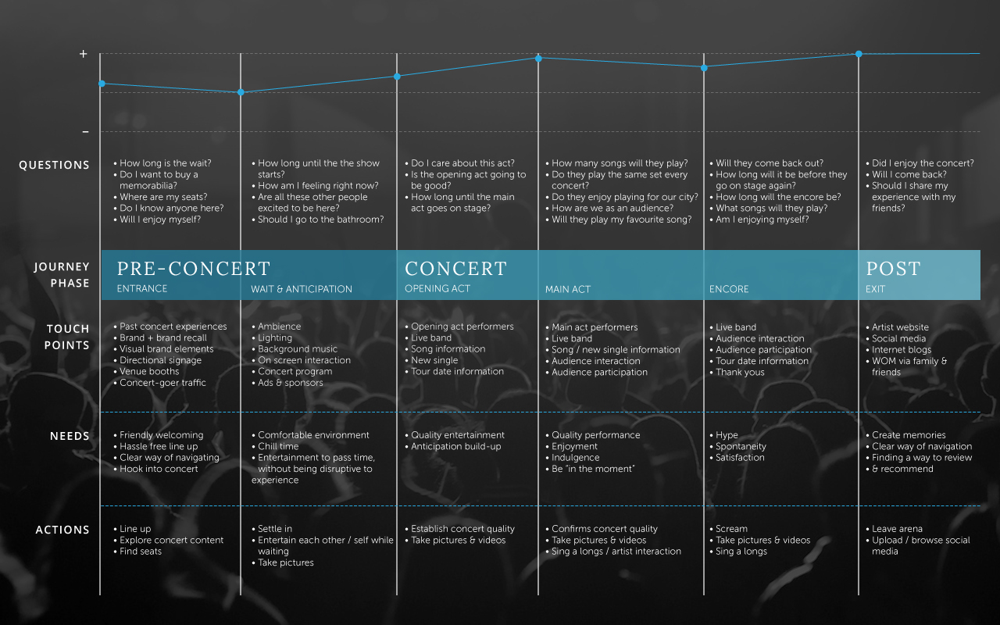
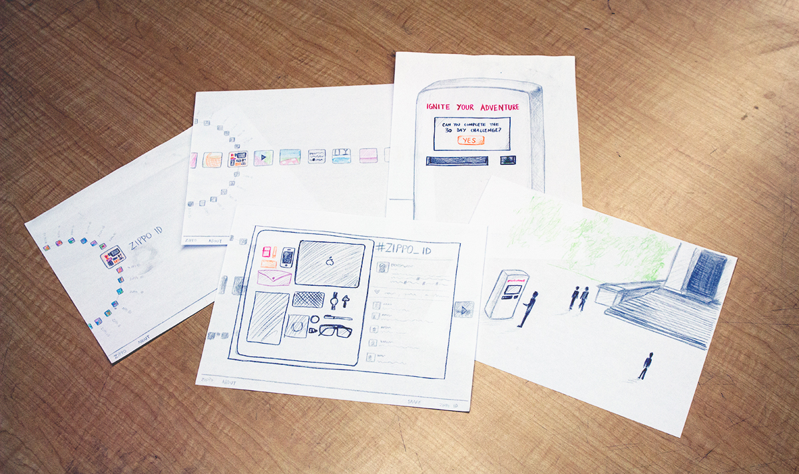

type
roles
skills
team
Zippo has been a popular tool and accessory since the 1940s, but over the years the popularity has dropped due to the decline of the tobacco industries.
By selecting a design agency we "pretend" to work for, and researching and understanding the brand values of Zippo, we went through a series of iterations and gained valuable experience in creating an opportunity for an experience design intervention.
How was Zippo cool back then?
Through our research, Zippo is best known for their windproof lighters and carries off a consistency in the design of each and every one of them. The imagery of the using zippo gives off a strength and masculine feel, yet is authentic and timeless.
We also discovered that the use Zippos were especially popular back in the World War days where the lighters were massed produced for military to the 60-70s rock music days. However, as time goes by things change, there is no longer a demand for those anymore. That is why we decided to target a new group of people, a new generation.
We designed a framework that would help us guide our design process by implementing a creative agency of our choice's design process. We selected Crispin Porter and Bogusky (CP+B) because we think will fit this project as CP+B enjoys taking on challenges on brands that have lost their touch in the market and design an experience that makes them fresh again.
We decided that looking into a concert experience would fit well with generation y+z and ties back to how Zippos were used back in the days in concerts where audience would raise up their Zippos in the air during the performance to "salute" or show a sign of unity. This was what was called a "Zippo Moment."
mapping out a concert experience
We mapped out a journey framework of how one would go through the entire concert experience and picked points in where we think could have a design intervention.

We want to encapsulate the intangible value of authenticity within the Zippo lighter in order to appeal to young trendsetters who have a need for genuine experiences to differentiate themselves from mass culture.
The XX is a band whose music is part of the authentic music movement associated with young trendsetters today. At the same time, their music is popular enough for a viral movement to be made possible. We chose to collaborate with them because it provides the proper context and crowd for our design to be made viable.
implementing with no modern technology
We had gone through a total of 3 iterations within a 3 weeks time. While we had explored other options such as working along with social media and digital interfaces, we also find that by incorporating such modern technology it would interfere with the authentic, classic brand that we are trying to re-establish for Zippo. That is why the goal of our design is to implement the experience in a subtle manner that doesn't disrupt the authentic values of these once well known lighters.
Our final iteration draws back to how the lighters were used during the "Zippo Moments" but use it to interact with the artist during the performance. Our mockup here shows that during the middle of the XX's hit song, "Crystalized" they would raise their own Zippos up in the air to signal the audience to do the same. The heat sensors that would be installed above the audience will track the amount of lighters that are lit in the venue, which will interact with a visual display behind the artist, creating an experience that will show a unity between the artist and the audience.
Although we landed on the final week of the project with the intention of designing an intervention with a digital form, we ended up with something that was out of our comfort zone with performance design. It was a challenging approach to the project, but it was definitely a rewarding experience overall.